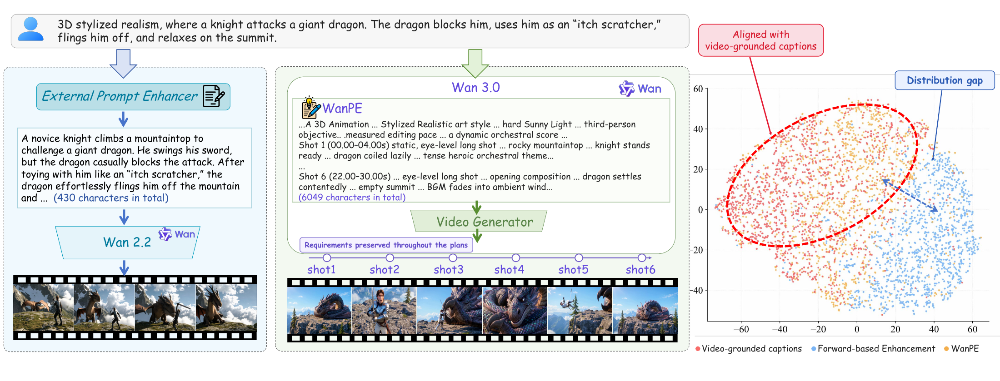
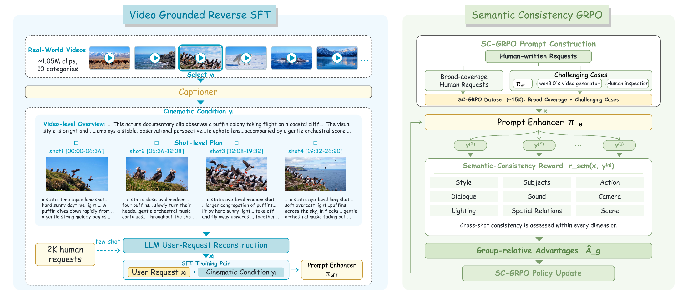
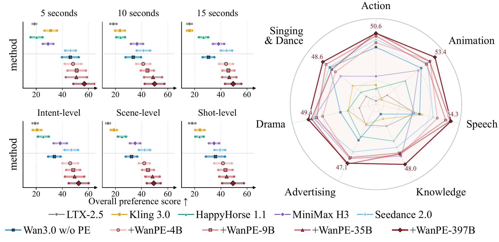

WanPE: Towards Cinematic Prompt Enhancement for Modern Text-to-Video Generation
Abstract
Video generation begins in text space by authoring a cinematic screenplay, then materializes into pixels. As contemporary video generators scale to 30 seconds and faithfully follow complex conditions, the textual prompt largely directs the production, planning how actions, camera trajectories, lighting, and sound unfold across multi-shot sequences. In this paper, we present WanPE, a 397B-parameter prompt enhancement model trained on 1.05M real-world videos to master director-level cinematic planning. WanPE formulates shot-level cinematic plans via video-grounded reverse construction, and employs Semantic-Consistency GRPO (SC-GRPO) to faithfully preserve user requirements across shots and over time. To benchmark this capability, we curate WanPEval, a human-annotated testbed covering durations from 5 to 30 seconds across varying intent granularities, supported by ~11K blind pairwise assessments. When powering Wan3.0’s video generator, WanPE-397B boosts human preference over raw user prompts by 10.7–18.8 points at 5–15 seconds, and by a dramatic 50.9 points in the 30-second arena. Ablation studies show that reverse construction demonstrates clear superiority over forward rewriting, while SC-GRPO robustly preserves semantic fidelity across model scales. Ultimately, WanPE leads all evaluated commercial offerings at 5–15 seconds and remains competitive with Seedance 2.5 at 30 seconds.
Motivation

Method

Results

Preference Scores on WanPEval
(i) 30-second subset against Seedance 2.5, under Wan3.0. (ii) Reverse-constructed vs. forward-based enhancement, under Wan3.0. (iii) Format-adapted WanPE vs. native enhancers on LTX-2.5 and MiniMax-H3 in two separate battles.
| Method | Action | Anim. | Speech | Ad. | Sing & Dance | Drama | Know. | Overall |
|---|---|---|---|---|---|---|---|---|
| Exp1: 30-second subset | ||||||||
| Seedance 2.5 | 68.18 | 46.43 | 55.00 | 81.25 | 60.00 | 56.00 | 60.71 | 59.76 |
| downstream generator: Wan3.0's video generator | ||||||||
| Original request | 4.17 | 9.38 | 15.79 | 5.00 | 22.50 | 4.00 | 3.57 | 9.38 |
| + WanPE-397B | 50.00 | 81.25 | 73.68 | 75.00 | 47.50 | 53.85 | 57.14 | 60.24 |
| Exp2: Reverse vs. forward enhancement | ||||||||
| downstream generator: Wan3.0's video generator | ||||||||
| Original Request | 23.97 | 21.01 | 29.85 | 19.32 | 35.00 | 22.60 | 6.38 | 23.05 |
| Forward Rewriting | 39.57 | 38.43 | 42.13 | 43.57 | 38.61 | 34.62 | 41.89 | 39.49 |
| Forward-target SFT | 30.36 | 44.23 | 32.28 | 37.00 | 35.34 | 33.72 | 34.26 | 35.17 |
| WanPE-397B-SFT | 46.48 | 55.98 | 48.31 | 49.32 | 45.51 | 51.54 | 51.23 | 49.86 |
| Exp3: Cross-generator transfer (5–15s) | ||||||||
| downstream generator: LTX-2.5-Base | ||||||||
| LTX-2.5-PE | 8.33 | 18.33 | 30.00 | 32.50 | 7.50 | 26.67 | 25.00 | 21.11 |
| WanPE-397B | 25.00 | 38.33 | 53.33 | 27.50 | 27.50 | 36.67 | 35.00 | 35.56 |
| downstream generator: MiniMax-H3-Base | ||||||||
| H3-Context-IR | 44.44 | 31.03 | 33.33 | 39.47 | 37.50 | 29.31 | 40.00 | 35.92 |
| WanPE-397B | 29.63 | 37.93 | 40.00 | 44.74 | 47.50 | 50.00 | 40.00 | 41.09 |
Video Demos
Acknowledgements
We sincerely thank Junjie He, Xinhua Cheng, Zeyinzi Jiang, Xiaowen Li, Wei Wang ~1, Tianyi Gui, Xiaoyi Bao, Wenting Shen, Tianxing Wang, Ang Wang, Weize Duan, Wei Wang ~2, Zhi-Fan Wu, Chaojie Mao, and Lei Shang for their valuable support and contributions to this work.